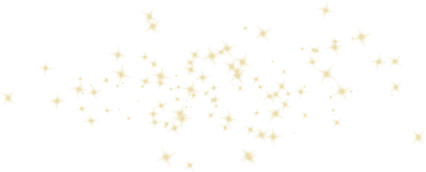

• Спорт •

| СПОРТ |
это краткая фраза, содержащая вербальную формулу, которая при многократном повторении закрепляет требуемый образ или установку в подсознании человека, способствуя улучшению его психоэмоционального фона и стимулируя положительные перемены в жизни. |
| ПЯТЬ ПРОСТЫХ ЭТАПОВ СОЗДАНИЯ СОБСТВЕННЫХ АФФИРМАЦИЙ: |
- Определите, чего вы хотите на самом деле
- Определите, почему вы этого хотите
- Определите, каким человеком вы должны быть для того, чтобы достичь желаемого
- Определите, что вы должны делать, чтобы достичь желаемого
- Включите в аффирмацию вдохновляющие цитаты и филосовские мысли
| ПРАВИЛА СОСТАВЛЕНИЯ АФФИРМАЦИИ |
- Утверждение должно быть сформулировано как факт, причём в настоящем времени.
- Используйте только позитивные слова, избегайте негативных утверждений.
- Аффирмация должна рождать позитивные эмоции, радость, драйв и страсть.
- Аффирмация должна быть краткой и в то же время яркой, образной.
- Конкретизируйте. Для этого спросите себя, кем вы хотите стать, чтобы чувствовать счастье и любовь.
- Нужно выбирать аффирмацию, которая подходит вам лично. Ещё лучше самому сформулировать её для себя.
- Верьте в то, что говорите. Чтобы усилить веру, нужно фиксировать любые свои победы.
- В конце аффирмаций можно добавить «я получаю намного больше, чем ожидаю».
- Утверждение должно давать направление движения и не иметь отрицания. (Например, во фразе «Я принимаю себя таким, какой я есть» имеется указание на установку в подсознании «оставаться таким».) Отрицание ничего не создаёт. Из этого следует, что оно не даёт подсознанию информации о развитии какой-либо установки.
- Отрицание вообще не воспринимается на подсознательном уровне.